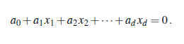
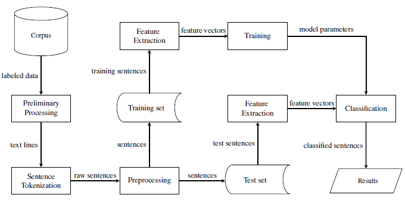

A Classifier to Distinguish Between Cypriot Greek and Standard Modern Greek
Hanna Sababa
Overview
Introduction
Linguistic background
Language vs Dialect
Written or not?
Linguistic similarity?
Mutual intelligibility?
Politics
Common Turkic languages
Arabic dialects

Dialect continuum
Dialect continua → Languages
“Most languages have arisen out of dialect continuum situations and are considered separate languages for reasons that are by no means entirely linguistic.”
Peter Trudgill (1997)
Dialects are important
- As much variation as languages
- Widespread usage
- Use in education enhances children's development
- Source of a sense of identity
Greek dialects
Cypriot Greek (CG)
- Diglossia in Cyprus: CG vs SMG
- CG is a dialect continuum
- Basilectal vs mesolectal CG
Importance of CG
Introduction
Technical background
Natural Language Processing (NLP)
- NLP research and applications:
- Classifying text into categories
- Extracting info from text
- Tagging words with their parts of speech (POS)
- Analyzing sentence structure
- Uses large bodies of text called corpora
Social media as a data source
- Comments on news articles and blogs
- Forum posts
Classification
Introduction
Classification 101
- Definition
- Features and feature vectors
- $ n \times d $ data matrix with $ n $ training observations in $ d $-dimensional space:
Classification
Classifiers
Classifiers
- $ f(x): \mathbf{R}^d \rightarrow \mathbf{R} $
- For binary classification: $\; f(x) \geq 0 $
- Linear vs non-linear
- Linear classifiers:
- Naive Bayes (NB)
- Support Vector Machines (SVMs)
- Logistic Regression . . .
Linear classifiers
- Linear combination of characteristics
- Training = Find weight vector
- Linear classification boundary:

Naive Bayes classifier
- Bayes' theorem:
- Multiple evidences:
- After naive assumption:
Naive Bayes: Variations and advantages
- Variations:
- Bernoulli NB
- Multinomial NB
- Advantages:
- Simple, easy to implement, fast
- Ideal when the dimension of the feature space is high
Support Vector Machines
The term is used interchangeably to refer to the maximal margin classifier, the support vector classifier and the support vector machine.
Maximal margin classifier
- Hyperplane (Flat affine $ d - 1$ subspace):
- Separating hyperplane
- Maximal margin hyperplane ✓

What are support vectors?
Support vector classifier
- Generalization of maximal margin classifier for non-separable classes
- Uses a soft margin
- Support vectors now include points on the wrong side of the margin
- Good, but only for linear boundaries
Support vector machine
- Allows feature space to be expanded with functions of predictors
- Uses kernels
- Kernels are complex but make the feature space expansion efficient
Linear SVC Pros and Cons
- Pros:
- Easy to interpret meaning of features
- Can be extended for non-linear boundaries
- Cons:
- Higher memory and computing resource usage
- Multiclass classification is challenging
Logistic Regression
- Adaptation of linear regression for categorical independent variables
- Need function with outputs in the range $ [0, 1] $:
- Uses maximum likelihood estimation to fit the model
Logistic regression: Considerations
- Can be extended for multiclass classification but not common in practice
- Simpler than SVMs so try first if data is linearly separable
Performance metrics (1)
- For binary classifier:
- True positives (TP)
- True negatives (TN)
- False positives (FP)
- False negatives (FN)
- Confusion matrix:
Performance metrics (2)
- Accuracy
- Precision and recall:
- $ F_1 $ score:
Classification
Language classification
Language Classification
- Features: words, parts of speech (POS), $ n $-grams
- $ N $-grams: Groups of characters or words
- $ N $-gram padding
Discriminating between similar languages
- Bottleneck of state-of-the-art language classification
- Standard classifiers not tuned for the problem fall short
Technologies


Literature review
Research on language identification
- 1970s: Pioneering work by Leonard and Doddington
- 1980s: Language recognition algorithm to identify 7 spoken languages
- 1990s: Cavnar and Trenkle use $ n $-grams for text categorization
- 2000s: Better computer power, algorithms. Many successes.
- 2010s: Multilingual documents, social media, neural networks.
Research on discriminating between similar languages
- Pre-2014: Malay vs Indonesian, South Slavic languages, European vs Brazilian Portuguese
- 2014: The Discriminating between Similar Languages (DSL) shared task
- Post-2014: Czech vs Slovakian, Arabic dialects, Spanish dialects
Research on NLP in the Greek languages
- List of Greek stopwords
- Greek stemmer
- Greek POS tagger
- Tool for extracting multi-word Greek expressions
- Greek sentiment lexicon and sentiment analysis
- Whole suite of Greek NLP tools
- Review on using Python's NLTK library with Greek
- Identifying Greeklish in tweets and forums
Data collection
Data sources
- Facebook pages and groups
- Blogs and forums
Collection process
- No Greeklish, Latin characters, numbers, Cypriot diacritics
- Twitter:
- No retweets
- No reply tweets
- Searching by seed words
System architecture
Overview
Overview
System architecture
Corpus
Corpus content
- Structure:
- CG Features: Mostly mesolectal, a few basilectal
Data preprocessing
- Before text was stored in corpus
- When text is loaded from corpus to prepare for sentence tokenization
- After sentence tokenization, full preprocessing
Preprocessing Step 1
- Purpose: Each tweet or comment should span one line in the text file
- All groups of whitespace replaced by a single space
Preprocessing Step 2
- Purpose: Optimization for sentence tokenizer
- Remove duplicate consecutive punctuation
- Insert missing spaces between sentences
- Break down text into lines
Preprocessing Step 3
- Remove URLs, HTML entity references, emojis
- Strip Greek accents
- Remove Twitter-specific tags
- Convert to lowercase
- Remove all punctuation except for in ό,τι
- Remove left-over spaces
Text analysis
Corpus statistics
1039 sentences, 14126 words
7026 words in CG data
7100 words in SMG data
Top 10 CG and SMG words
Top 10 CG and SMG characters
Top 10 CG and SMG word 2-grams
Top 10 CG and SMG character 2-grams
Top 10 CG and SMG character 3-grams
System architecture
Feature extraction
Features
- Features used:
- Words
- Characters
- Word bigrams (no padding)
- Character bigrams
- Character trigrams
- Optimization: Final sigma elimination in character $ n $-grams
Feature extraction process
- Get word tokens using whitespace tokenizer
- Build feature dictionaries
- Vectorize feature dictionary
System architecture
Building the classifiers
How the classifiers were built
- Split data into training (80%) and test (20%) sets
- Training feature vectors and labels are used to fit 3 classifiers:
- Multinomial NB
- Linear SVC
- Logistic regression
- Feature sampling is done automatically by Scikit-learn's classifiers
Experimental results
Comparing the classifiers
- Mean accuracy with different classifiers:
- Accuracy and $ F_1 $ score were very similar
- Best classifier: Multinomial NB
NB Performance metrics
- NB confusion matrix:
- NB precision, accuracy, $ F_1 $ score:
NB Most informative features
Experiments conducted on features
- Removing padding for character $ n $-grams
- Using only character $ n $-gram features
- Ignoring words that appear in less than 1% of data
- Considering only the 300 most popular features
Error analysis
- Multinomial NB made 8 errors, linear SVC made 20 errors and logistic regression made 16 errors
- Out of Multinoial NB's 8 errors, 5 were also made by the other 2 classifiers
- Small corpus size and not using POS features were found to be the causes
Conclusion and future work
Conclusion
- Successfully built a CG-SMG classifier in Python with 95% mean accuracy
- Classifier and corpus distributed open source on Github
- Classifier has several applications on its own or in building other products
Direct Applications
Social media moderation
Future applications
Future work
- Extending classifier to work with Greeklish
- Translators that identify the Greek variety first
- Useful for CG researchers and learners
- Useful for immigrants such as domestic workers
- Work on speech